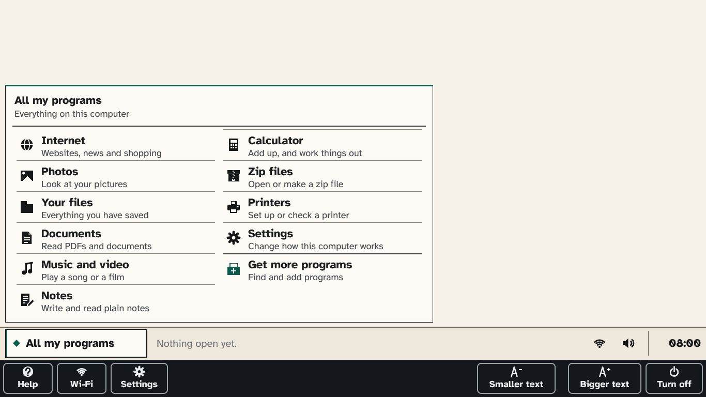
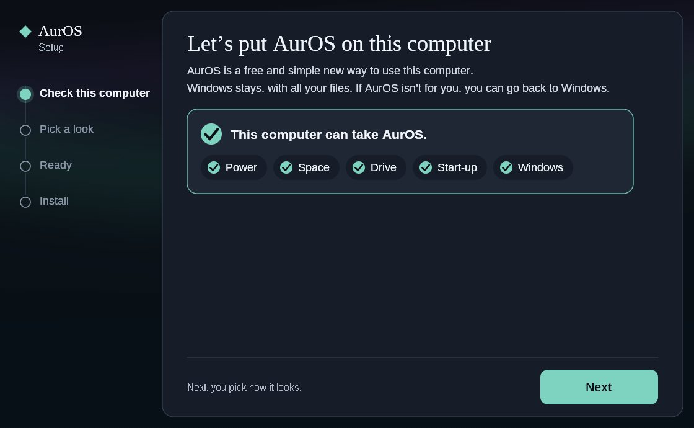
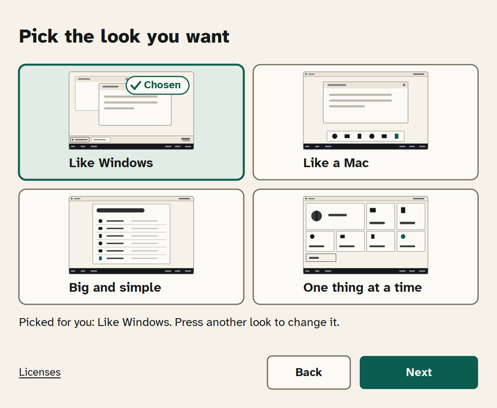
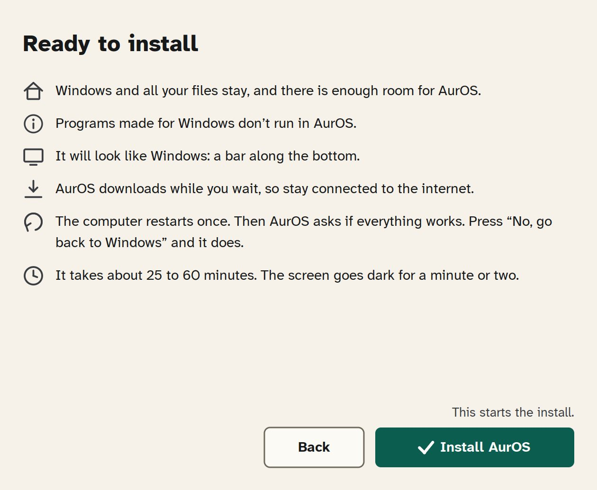
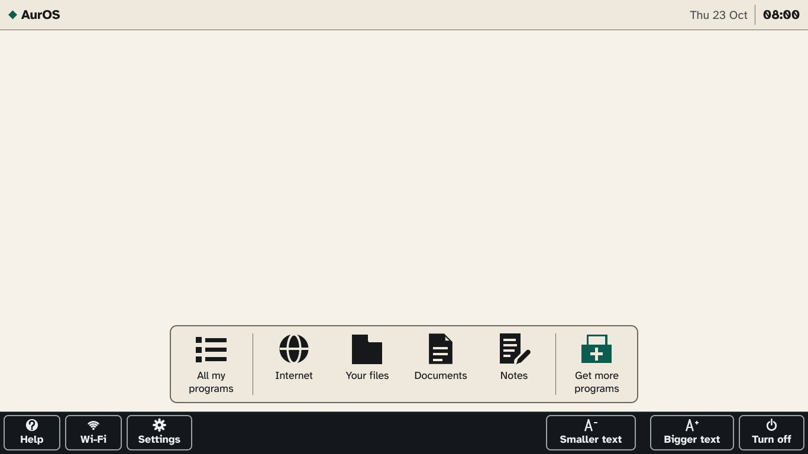
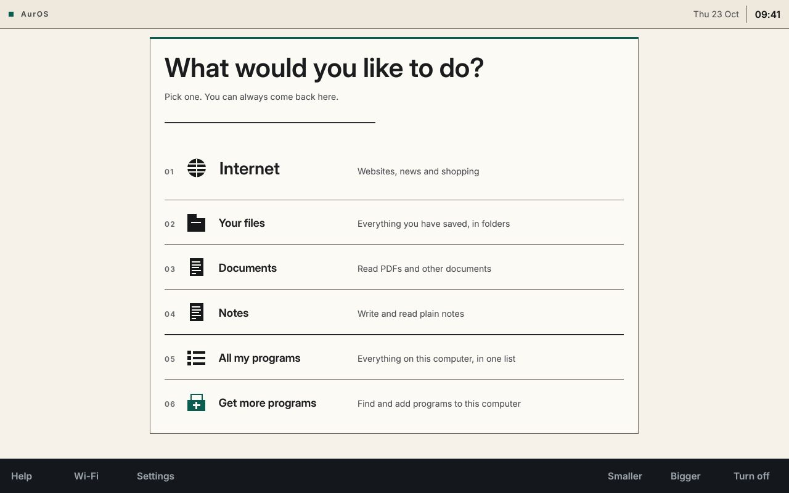
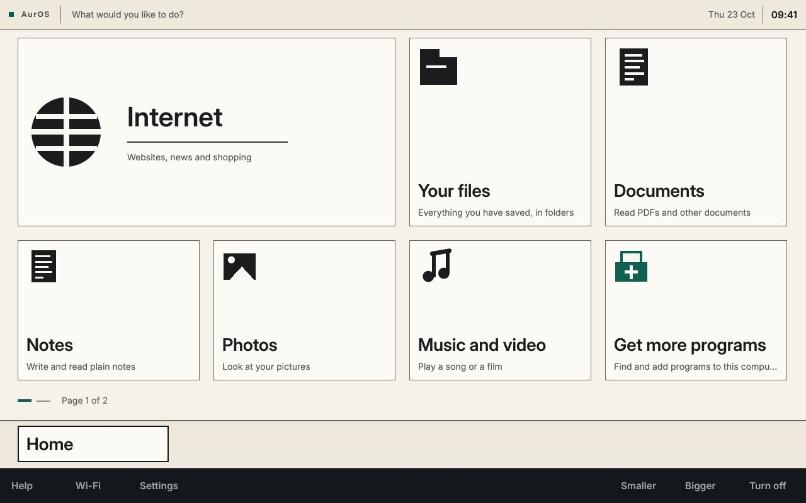

Your computer, new again.
A free, simple system for the Windows computer you already have. AurOS is made to keep Windows and your files, and to let you go back.
Any change to a drive carries some risk. Copy photos you can’t replace to a memory stick first.
Free. About 25 to 60 minutes (a guess). Not yet tested on a real computer.
Not sure which Windows you have? Press Get AurOS. Setup checks, and changes nothing if it can’t go on.
AurOS needs Windows 10 or 11, and this computer may have an older Windows. AurOS Setup checks first and tells you.
Open this page on your Windows computer.
Open this page on the Windows computer you want to change.
AurOS can’t go on this computer.
AurOS goes on a Windows computer, not a phone. Send yourself the link:
This is a Mac, and AurOS goes on a Windows computer. Send yourself the link:
This is a Chromebook, and AurOS goes on a Windows computer. Send yourself the link:
This computer isn’t running Windows, and AurOS goes on a Windows computer. Send yourself the link:
It has a different kind of chip inside (called ARM, as in Snapdragon laptops), and AurOS only works on the usual kind. Have another Windows computer? Send yourself the link:
It has the older, 32-bit kind of Windows, and AurOS needs the 64-bit kind. Have another Windows computer? Send yourself the link:
Do this on the Windows computer you want to change. See every step first

How to install
Three steps. Every one shown.
Your internet browser and Windows will each ask if you trust AurOS, more than once. If you got the file from this page just now, the answers are Keep (then Keep anyway), Run anyway and Yes. If you are not sure where a file came from, stop and ask someone. Never press Delete, Don’t run or No on this file. The pictures show exactly where: follow the numbered circles.
-
Step 1: Download it
Press Get AurOS. Your computer saves a file called AurOS-Setup.exe.
Your internet browser doesn’t know AurOS yet, so it asks if you trust it. Press Keep only if you got this file from this page a moment ago.
Then open it: press Open file under its name, or find AurOS-Setup.exe in your Downloads folder and open it.
If your antivirus program takes the file
Some antivirus programs don’t know AurOS yet either, and may put the file away. Nothing has been installed, and nothing on your computer has changed. Open your antivirus program, look for its list of blocked files, and put AurOS-Setup.exe back, only if you got it from this page a moment ago. If you can’t find it, press Stuck? Ask someone to help.
In Microsoft Edge (as it looks in October 2026)
Downloads
AurOS-Setup.exe isn’t commonly downloaded. Make sure you trust AurOS-Setup.exe before you open it. …Make sure you trust AurOS-Setup.exe before you open it
Microsoft Defender SmartScreen couldn’t verify if this file is safe because it isn’t commonly downloaded. Make sure you trust the file you’re downloading or its source before you open it.
Name: AurOS-Setup.exe
Publisher: UnknownReport this app as safe
Learn more
CancelDeleteDownloads
AurOS-Setup.exe
Open fileEdge changes its buttons from time to time. If they look different, press the three dots (…) next to the file, then Keep, then look for Keep anyway. Don’t press Delete.
In Google Chrome
Recent downloads
AurOS-Setup.exe
Suspicious download blocked›This file isn’t commonly downloaded and it may be dangerous.
DeleteDownload suspicious fileIn Firefox
If it says the file is not commonly downloaded: open the list of downloads (the arrow at the top right), press the file, then press Allow download.
-
Step 2: Say yes to Windows
Windows may show a blue box, Windows protected your PC, because it doesn’t know AurOS yet. If you see it, press More info, then Run anyway, only if you got this file from this page a moment ago.
Then Windows asks whether AurOS may make changes. Press Yes, the white button on the left. The blue button is No.
If Windows asks for a password, stop. It needs the person who set up this computer.
Only if Windows shows this blue box:
Windows protected your PC
Microsoft Defender SmartScreen prevented an unrecognized app from starting. Running this app might put your PC at risk.
More info
Don’t runWindows protected your PC
App: AurOS-Setup.exe
Publisher: Unknown publisherRun anywayDon’t runThen this, always:
User Account Control
Do you want to allow this app from an unknown publisher to make changes to your device?
AurOS-Setup.exe
Show more details
YesNoIf Windows says Smart App Control blocked an app, that is a Windows setting on some newer computers. Someone who knows computers can change it. Nothing was changed.
-
Step 3: Pick a look, then press Install AurOS
AurOS Setup checks your computer first. If anything would stop AurOS working, it tells you before it changes Windows.
As soon as it says your computer can take AurOS, it starts downloading about 2 GB, and unpacks it into about 5 GB more on your Windows drive, before you press Install AurOS. With a data limit, or on a phone’s hotspot, close it and come back on a home connection.
Press Next, pick the look you like, press Next again, then Install AurOS. When Setup says Ready to restart, press Restart now. The computer then restarts once, by itself. The screen goes dark for a minute or two. Leave the computer switched on.
Installing makes Windows smaller to fit AurOS, which changes how your drive is divided. Any change to a drive carries some risk, so copy photos you can’t replace to a memory stick first.
When AurOS starts, it asks whether everything works. Until you answer, AurOS is set to start each time you switch on, and Windows and your files are meant to stay on this computer. If AurOS fails to start, the computer should start Windows instead. If it does not, ask someone to help (the button below).
No, go back to Windows: Windows starts the next time this computer starts. AurOS stays on this computer, with anything you saved in it. Nothing is deleted.

When it says it can, press Next. 
Press the look you like, then Next. 
Then Install AurOS. Does everything work?
Check one thing first.
Does the internet work?Open InternetYes, it all worksAurOS starts every time from now on. Windows and its files stay on this computer.
Let me look firstNothing changes. AurOS asks again the next time it starts.
No, go back to WindowsWindows starts the next time this computer starts. AurOS stays on this computer, with anything you saved in it. Nothing is deleted.
After the restart, AurOS asks. Check the internet first. When you’re sure, press Yes, it all works.
Four looks
Pick the one that feels like home.
You choose in AurOS Setup, and you can change it any time in Settings, under How this computer works.
Like Windows
A bar along the bottom, just like now.

Like a Mac
Your programs in a row along the bottom.

Big and simple
Big buttons. Nothing ever gets hidden.

One thing at a time
Each program fills the whole screen.
Every look has Get more programs, with many more programs, free.
Good to know.
The small print, in plain words.
- How long it takes
- About 25 to 60 minutes. Older computers take longer, about 1 to 3 hours. AurOS Setup tells you the time for your computer before you start.
- Which computers
- A Windows 10 or Windows 11 computer made since about 2013. Not Macs, Chromebooks, phones or tablets.
- The download
- As soon as AurOS Setup says your computer can take AurOS, it starts downloading AurOS, about 2 GB, and unpacks it into about 5 GB more on your Windows drive, before you press Install AurOS. If your internet has a data limit, or you are on a phone’s hotspot, close AurOS Setup instead. Closing it stops the download and normally deletes what it fetched.
- Room it needs
- AurOS needs some empty room on your computer. AurOS Setup checks, and tells you if there isn’t enough.
- Keep it plugged in
- Plug in the charger before you start, and leave it in until AurOS has started. AurOS Setup waits for it.
- Locked drives
- If Windows has locked this computer’s drive, AurOS can’t go on it yet. Many newer laptops do this by themselves. AurOS Setup checks, and tells you before it changes anything. If Windows has locked this computer’s drive (many newer laptops do this by themselves), AurOS Setup pauses the lock for one restart, and it comes back on by itself. Nothing is unlocked or removed.
- Your Wi-Fi
- AurOS doesn’t bring your Wi-Fi across yet. After the restart, press Wi-Fi at the bottom left and choose your network. You will need its password, so have it to hand. AurOS Setup offers to Bring my Wi-Fi across, ticked for you, so AurOS is online the moment it starts. Untick it if you would rather not.
- If AurOS can’t go on your computer
- AurOS Setup says so in plain words before it changes anything, and nothing on your computer has been changed.
- What AurOS can’t do yet
- AurOS can’t read the screen aloud yet. Programs made for Windows don’t run in AurOS.
- AurOS is new
- Every version is installed on a virtual test computer running Windows 11 on a fast drive before it reaches you. Windows 10, older and slower computers are not tested that way, and it has not yet been tried on a real, physical computer, so keep a copy of the photos you treasure somewhere else too, such as a memory stick. No change to a drive is free of risk.
- Your privacy
- No account and no ads. The website and the download are hosted by GitHub, which keeps visitors’ internet addresses in its own records. AurOS Setup sends nothing to the AurOS project. Read the privacy page.
Questions.
Is it free?
Yes. No ads and no subscription. AurOS is made in the open, so anyone can check how it works.
Will I lose my files?
AurOS is made to keep your files. To make room it makes Windows smaller, and moves Windows’ files to do it. If the power fails or the computer crashes while it does that, Windows or your files could be damaged and might not come back. No change to a drive is free of risk, so copy the photos you treasure onto a memory stick first.
Can I go back to Windows?
That is what it is made for. Until you tell AurOS that everything works, Windows and your files are meant to stay on this computer, and you should be able to go back. After No, go back to Windows, Windows starts the next time this computer starts. AurOS stays on this computer, with anything you saved in it. Nothing is deleted.
Later, Put Windows back in AurOS’s Settings removes AurOS, and anything you saved in AurOS goes with it, so copy what you want to keep onto a memory stick first. It changes the drive again, so it carries some risk too.
What about my programs, like Microsoft Office?
Programs made for Windows don’t run in AurOS. AurOS comes with its own programs for the internet, notes, photos, music and video, and Get more programs has many more, free. You can use Microsoft Office on the internet, at office.com.
Is it safe?
AurOS Setup checks your computer before it changes Windows, and says so if AurOS can’t go on. Windows and your internet browser ask if you trust AurOS because they don’t know it yet. No change to a drive is free of risk, so copy the photos you treasure onto a memory stick first.
What if I get stuck?
Print the one-page guide and keep it by the computer. If AurOS Setup says AurOS can’t go on your computer, the page for someone who knows computers explains why. You can also ask us on the AurOS project page.
AurOS will never phone you, and nobody from AurOS will ever ask to connect to your computer, or ask for a card number, a password or gift cards. Anyone who does is not from AurOS.
Ready when you are.
Free. Made to keep Windows and your files.
Get AurOSAurOS goes on a Windows computer. Send yourself the link and open it there.